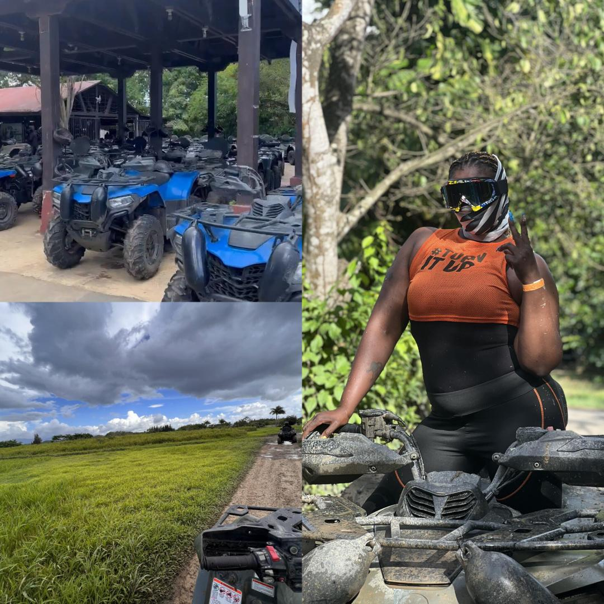

A beach front expierence! I enjoyed the Truffle wings (Crispy boneless wings, toasted sesame seeds, cilantro, blue cheese crumbs, truffle buffalo sauce). Went twice to enjoy the night view and then again to see it in the day, so beautiful!
Local food truck park
The atmosphere was live and vivid with music, laughter, dancing, and alcohol! Such a fun expierence.
Camporico Tril Ride...Yay, ATV!!
Experienced guides take you through 2,200 acres of land where you enjoy views of mountains, mangroves, lagoons, limestone formations, and wildlife roaming freely. This was my first time expeirencing ATV, but definitely not the last! Once the tour was over, I enjoyed their unique hilltop Mojito Bar.

Raya
A Caribbean Asian resturant. In the bottom left pic, it's Sake and a Japanese whiskey infused cocktail. I also enjoyed the Kani Crab Rolls (Spring Crisp | Seaweed Salad | Mango Papaya Gastrique | Tobiko). Of course I had to dress to par, the scence was classy and up-scale. I look good baby!!
Plane views
These moments pictured, I've dreamt of! To be able to experience the world from a different view, it's like a breath of fresh air. I had to take it all in because I didn't want it to end!